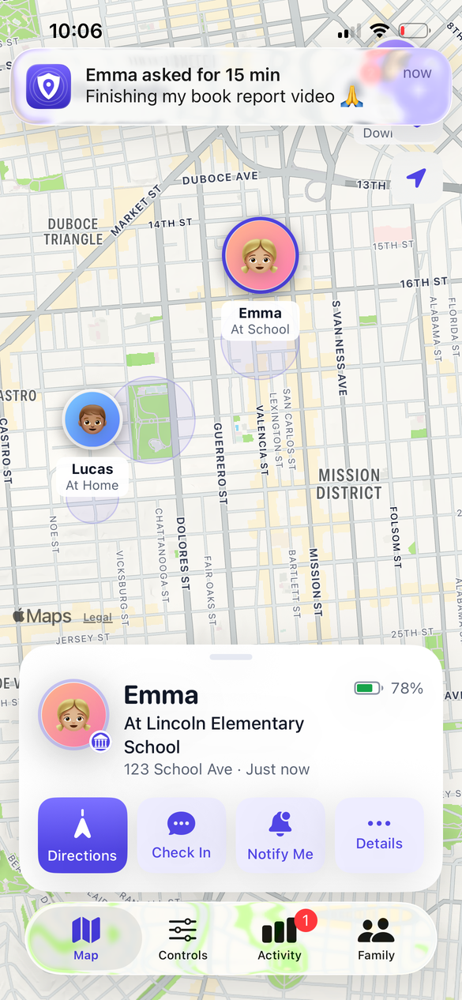
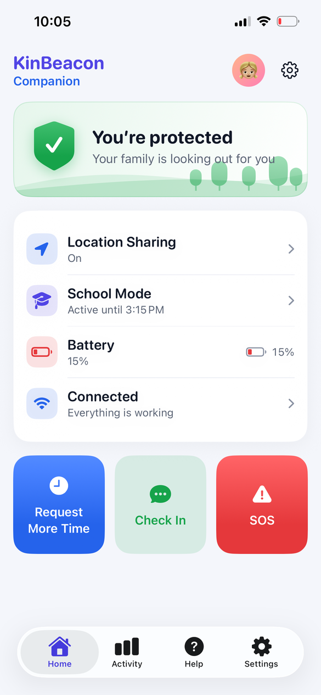
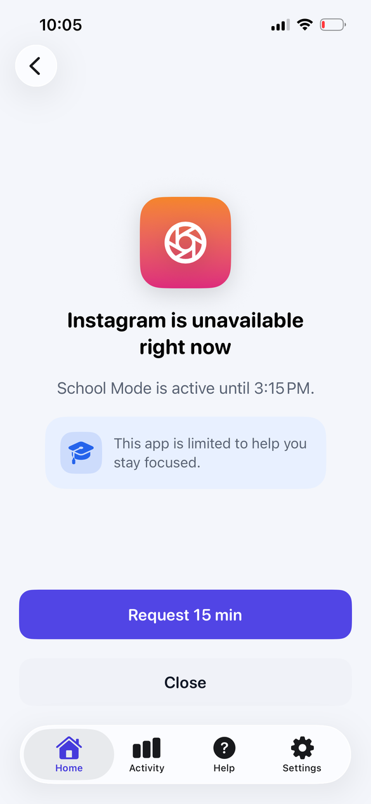
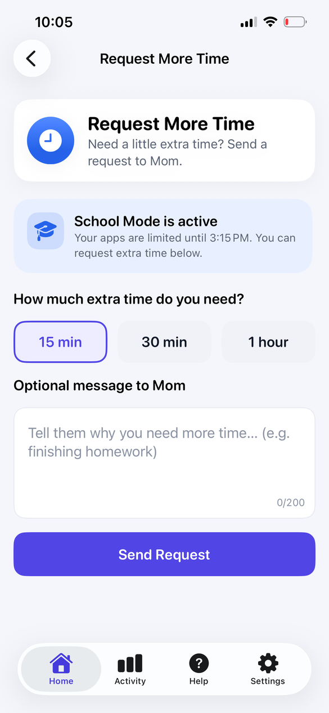

01 / EVERYDAY REASSURANCEiOS
Family map
See where your family is, with alerts for arrivals and departures at home, school and other safe places. Battery-aware updates help the phone last longer.
Safe places · Battery status
Explore the family mapKnow they made it to school. Make space for focus. Be there when they need you. Family safety that feels at home on iPhone.


Six ways to stay connected, build healthy routines, and look out for the people you love.
See where your family is, with alerts for arrivals and departures at home, school and other safe places. Battery-aware updates help the phone last longer.
Set routines for School, Homework and Bedtime. Choose allowed apps, limits and downtime with controls powered by Apple’s Screen Time.
A quick “I’m OK” makes a big difference. Children can check in, say they’re on the way, or send “Need help” with an optional message.
Hold for three seconds to send an SOS to the family, including location and battery level. A deliberate action helps avoid accidental alerts.
Children can ask for 15, 30 or 60 more minutes. Parents can approve or decline from an actionable notification and keep the day moving.
Get a heads-up when important permissions change. Send a fix prompt to your child’s device and follow its reported status.
See your family on one map, with safe places, battery levels and directions. Ask for a check-in when you want a little reassurance.

Family safety should build trust. Location sharing is visible, permissions are explained, and screen-time reports stay inside Apple’s on-device sandbox.
Location and check-in information are accessible to your paired family.
Apple processes app usage locally. Reports are not uploaded to KinBeacon’s servers.
Location history is retained for 30 days. Delete your account in Settings.
One native iOS app, with a place for parents and a companion experience for children.
On the parent’s iPhone, create an account and name your family.
Choose “Add a child’s device.” Enter the six-digit code on the child’s phone.
Enable the required permissions and choose your focus schedules.

SwiftUI on iPhone, Apple’s system controls, and a backend that keeps each family’s data separate. Explore the code and run it yourself.
Accounts, device pairing, live family updates and notifications. Postgres row-level security restricts data access to the family it belongs to.
Explore the parent and child views with a simulated family. Try the map, School Mode, extra-time requests, check-ins and alerts without a server.
30 Swift package modules, battery-aware location, and four Screen Time extensions.
This is a preview of the iOS app. You can build it from the GitHub source and explore the built-in demo. App Store distribution is pending; there is no public download link yet.
It’s one iOS app with two roles. The parent creates the family, then pairs the child’s iPhone using a six-digit code. Children don’t need to create their own account.
KinBeacon uses Apple’s FamilyControls, ManagedSettings and DeviceActivity APIs. A parent authorizes Screen Time on the child’s device and chooses schedules, allowed apps and restrictions.
With the required location permission, the child’s phone can send background updates and safe-place events. Update frequency adapts to movement and battery conditions. Connectivity, permission settings and iOS background limits can affect when an update arrives.
The app keeps cached family information and queues supported events for delivery when connectivity returns. A map position may be out of date while a device is offline. New check-ins, SOS messages and remote commands need connectivity to reach the family.
Yes. Run the app and choose “Try the demo” on the welcome screen, then explore either the parent or child experience. The demo uses a simulated family.
Explore KinBeacon and find a rhythm that works for your family.